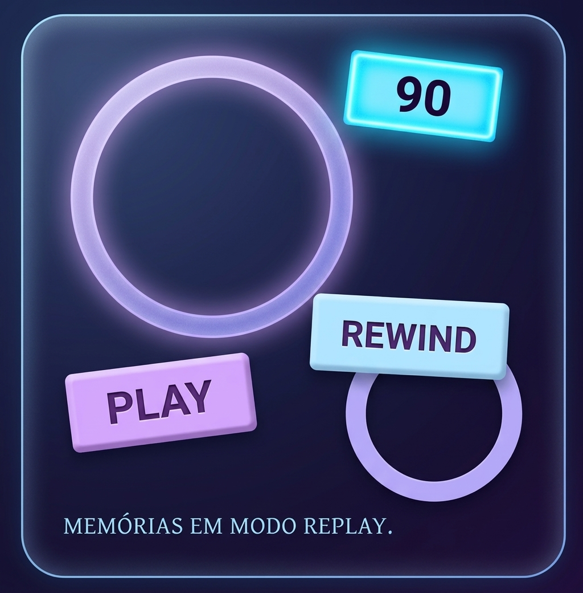

80 - 90 - 2000
HISTÓRIAS QUE
ATRAVESSARAM
GERAÇÕES.
Uma viagem pela TV, pelos heróis e pelas animações
que transformaram tardes comuns em grandes aventuras.
Uma viagem pela TV, pelos heróis e pelas animações
que transformaram tardes comuns em grandes aventuras.

Duas produções anteriores aos anos 90 que permaneceram vivas
na memória de quem cresceu cercado por fantasia e aventura.
Tokusatu, ação e personagens que viraram memória afetiva.
Algumas histórias envelhecem. Outras viram memórias.